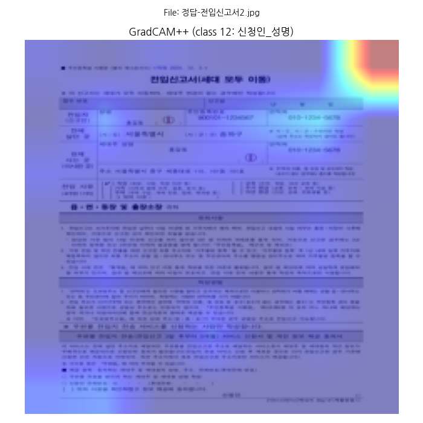

민원 내용을 입력하면 담당 기관·부서와 필요한 서류를 추천하고, 올린 서류가 맞는 서류인지, 전입신고서에 빠뜨린 칸은 없는지까지 확인해 주는 AI 민원 접수 보조 서비스입니다.
2026.03 · 4인 팀 프로젝트
AI 모델 학습·평가, FastAPI 추론 API, Streamlit 데모
로컬 환경에서 실행 가능한 프로토타입
민원인이 접수 전에 직접 찾아보고 확인해야 하는 일을 줄이는 것이 목표입니다.
민원 입력 → 민원 분류 → 서류 종류 확인 → 전입신고서 칸 검사 → 결과 표시 순서로 진행됩니다.
텍스트 분류와 이미지 분석을 이어 붙인 4개 모듈입니다. 탭 이름 옆 표시로 개인 담당과 팀 공동 범위를 구분했습니다.
전입신고서 한 장에서 여러 칸이 동시에 채워져 있거나 비어 있을 수 있습니다. 그래서 "이 문서는 A다"처럼 하나만 고르는 분류가 아니라, 14개 칸 각각에 대해 '기입됨 / 비어 있음'을 따로 판단하는 다중 라벨 분류로 문제를 정의했습니다.
ImageFolder 대신, CSV를 읽어 14개 값을 돌려주는 Dataset을 직접 구현| 백본 | ImageNet 사전학습 ConvNeXt-Small |
| 출력층 | Linear(768, 14)로 교체 |
| 손실 함수 | BCEWithLogitsLoss (칸마다 독립적인 예/아니오 문제) |
| 학습 범위 | 앞쪽 층은 고정하고 뒤쪽 features[6], features[7]와 출력층만 학습 |
| 데이터 증강 | 밝기·대비 변화(ColorJitter)만 사용, 좌우 반전은 제외 |
| 과적합 방지 | Early Stopping (patience 3) |
| 구분 | 칸 이름 | 기입된 비율 | 특징 |
|---|---|---|---|
| 전입자 | 성명 / 서명·도장 | 59.8% / 61.8% | 손글씨 이름과 도장 날인 여부 |
| 전입자 | 주민등록번호 | 47.9% | 빈칸이 가장 많은 항목 |
| 전입자 / 현 거주지 | 연락처 / 연락처 | 56.0% / 62.3% | 숫자·하이픈 손글씨 |
| 이전 주소 | 시·도 / 시·군·구 | 50.7% / 81.2% | 이사 오기 전 주소 |
| 현 거주지 | 세대주 성명 / 서명·도장 / 주소 | 74.3% / 68.6% / 75.0% | 현재 세대주 확인 정보 |
| 체크 항목 | 전입 사유 / 우편물 서비스 동의 | 74.7% / 100% | 체크 표시(V, X) |
| 신청인 | 성명 / 서명·도장 | 100% / 100% | 거의 항상 채워져 있어 학습에 주는 정보가 적음 |
| 회차 | 바꾼 점 | 데이터 | Accuracy | mAP |
|---|---|---|---|---|
| 1차 | ImageNet 기본 전처리·정규화 | 649장 | 0.9598 | 0.9870 |
| 2차 | 손글씨 데이터 추가, 데이터에 맞춘 정규화 값 적용 | 약 4,000장 | — | 0.9988 |
| 3차 | Optuna로 batch size·learning rate 탐색 | 약 4,000장 | — | 0.9997 |
mAP는 14개 칸 각각의 AP(정밀도-재현율 곡선 아래 면적)를 평균한 값입니다. 위 수치는 프로젝트 내부 데이터 분할에서 측정한 것이며, 서식이 고정된 비슷한 이미지가 많아 실제 행정 문서 전체에 대한 성능으로 보지는 않았습니다.
민원 문장 하나에는 담당 기관, 담당 부서, 민원 이름, 그리고 여러 개의 필요 서류가 동시에 연결됩니다. 그래서 정답을 하나만 고르는 방식 대신, 192개 라벨 각각이 해당하는지를 따로 판단하도록 만들었습니다.
기관:구청, 기관:읍·면·동 행정복지센터, 기관:보건소 등부서:민원여권과/여권팀, 부서:자동차민원과, 부서:건축과 등민원명:전입신고, 민원명:여권 발급, 민원명:확정일자 신청 등문서:전입신고서, 문서:신분증, 문서:임대차계약서 원본 등데이터: Train 4,040 / Validation 1,010 / Test 1,270건
라벨끼리 서로 배타적이지 않기 때문에, 라벨마다 "해당한다 / 아니다"를 따로 학습하는 BCEWithLogitsLoss를 사용했습니다.
추론할 때는 192개 라벨의 확률을 각각 구한 뒤 0.4 이상인 라벨을 모두 결과로 보여 주고,
기관:, 부서:, 민원명:, 문서: 접두어로 묶어 화면에 나눠 표시합니다.
def classify_complaint(text, model, tokenizer, label_cols, threshold=0.4):
encoding = tokenizer(
text, truncation=True, padding="max_length", max_length=128, return_tensors="pt"
)
input_ids = encoding["input_ids"].to(device)
attention_mask = encoding["attention_mask"].to(device)
with torch.no_grad():
outputs = model(input_ids=input_ids, attention_mask=attention_mask)
probs = torch.sigmoid(outputs.logits).squeeze(0).cpu().numpy()
predictions = [(col, float(p)) for col, p in zip(label_cols, probs) if p >= threshold]
return sorted(predictions, key=lambda x: x[1], reverse=True)사용자가 올린 이미지가 추천받은 서류와 같은 종류인지 확인하기 위해, 자주 쓰이는 8종 서류를 구분하는 분류 모델을 만들었습니다.
한 이미지는 한 종류의 서류이므로 CrossEntropyLoss로 학습하고, 추론 시 확률이 가장 높은 1종을 고릅니다.
화면에서는 운전면허증과 주민등록증을 '신분증'으로 묶어 추천 서류와 비교하며,
올린 서류가 전입신고서로 분류된 경우에만 14칸 검사로 넘어갑니다.
데이터: Train 1,280장(클래스당 160장) / Validation 240장 / Test 195장
휴대폰으로 찍은 사진은 실제 픽셀은 그대로 두고 "몇 도 돌려서 보여 줄지"만 파일 정보(EXIF)에 적어 두는 경우가 많습니다.
이를 그대로 모델에 넣으면 옆으로 누운 서류가 들어갈 수 있어, 이미지를 열 때 ImageOps.exif_transpose로 실제 방향대로 돌려 놓았습니다.
글로 입력하기 어려운 민원인을 고려해, 녹음 파일을 텍스트로 바꾸는 스크립트를 만들었습니다.
audio/ 폴더의 음성 파일 이름을 인자로 받아 실행turbo 모델로 한국어 음성을 텍스트로 변환sttout/파일명.txt로 저장import whisper
model = whisper.load_model("turbo")
audio_path = os.path.join(os.path.dirname(__file__), "..", "audio", sys.argv[1])
result = model.transcribe(audio_path)
base_name = os.path.splitext(sys.argv[1])[0]
output_path = os.path.join(output_dir, f"{base_name}.txt") # sttout/
with open(output_path, "w", encoding="utf-8") as f:
f.write(result["text"])같은 14칸 검사 문제에 ConvNeXt-Small, ResNet-50, EfficientNet-B4를 적용해 비교했습니다. (손실값: TensorBoard Smoothed 값, 2026-03-10 실험)
낮을수록 좋음. EfficientNet-B4는 20 epoch까지도 손실이 계속 내려가는 중이었습니다.
1차 → 2차(데이터 확장)에서 +1.18%p, 2차 → 3차(Optuna)에서 +0.09%p
| 비교 항목 | ConvNeXt-Small (화면 기본값) | ResNet-50 | EfficientNet-B4 |
|---|---|---|---|
| Train Loss | 0.0347 | 0.0130 | 0.1224 |
| Validation Loss | 0.0292 | 0.0149 (가장 낮음) | 0.0955 (아직 수렴 중) |
| 과적합 여부 | 없음 (Train ≈ Val) | 없음 (Train ≈ Val) | 손실 그래프 흔들림이 큼 |
| 정규화 방식 | LayerNorm (배치 크기 영향 적음) | BatchNorm | BatchNorm |
| 합성곱 크기 | 7×7 (한 번에 넓은 영역을 봄) | 3×3 | 3×3 / 5×5 |
| 추가 학습한 층 | features[6] + features[7] |
layer4 전체 |
features[-1] 1개 블록 |
| 출력층 | classifier[2]: 768 → 14 |
fc: 2048 → 14 |
classifier[1]: 1792 → 14 |
ResNet-50은 검증 손실 0.0149로 세 모델 중 가장 낮았습니다. 마지막 단계(layer4) 전체를 다시 학습했고, 출력 직전 특징이 2048차원으로 넉넉한 점이 영향을 준 것으로 봅니다.
LayerNorm은 배치 크기와 상관없이 샘플마다 정규화해서 작은 데이터·작은 배치에서도 학습이 안정적입니다. 또 다시 학습한 층이 2개로, 1개만 학습한 EfficientNet보다 서식 데이터에 더 많이 맞춰질 수 있었습니다.
BatchNorm은 배치 안의 평균·분산을 쓰기 때문에 4~8장처럼 배치가 작으면 값이 흔들립니다. 마지막 블록 1개만 학습했고, 20 epoch 시점에도 손실이 계속 내려가는 중이어서 학습이 덜 끝난 상태였습니다.
처음에는 batch size 8, learning rate 1e-4를 "보통 무난한 값"이라는 이유로 쓰고 있었습니다. 근거를 갖기 위해 Optuna로 탐색했습니다.
[4, 8, 16] · 1e-5 ~ 1e-3 / 3차 실험 [6, 8] · 4e-4 ~ 1e-3mAP 개선폭은 Optuna(+0.09%p)보다 데이터 확장(+1.18%p)이 훨씬 컸습니다. Optuna의 실제 이득은 "왜 이 값인가"에 답할 수 있게 된 것이었습니다.
ImageNet 정규화 값은 일반 사진의 평균·표준편차입니다. 행정 서식은 대부분이 흰 배경이라 분포가 전혀 달라서, 2·3차 실험에서는 데이터셋에서 직접 계산한 값을 사용했습니다.
평균이 0.94 근처, 표준편차가 0.1 이하로 몰려 있는 입력을 고르게 펴 주기 위한 조정입니다.
모델이 이미지의 어느 부분을 보고 판단했는지 히트맵으로 확인했습니다.
features[-1], ResNet-50: layer4[-1])

efficiNetB4/gradcam_result.png 파일을 같은 폴더에 두면 이미지가 표시됩니다.';">빨간색일수록 모델이 판단에 많이 참고한 영역입니다. 히트맵은 사후 설명이므로 원인을 증명하지는 않습니다.
실제 Streamlit 화면의 흐름을 브라우저에서 따라가 볼 수 있게 만든 체험용 화면입니다. 실제 모델을 호출하지 않으며, 결과는 실제 라벨 이름으로 만든 예시입니다.
각 항목 이름은 "무엇을 잘못 판단했는가 — 그래서 무엇을 배웠는가" 형태로 붙였습니다.
[상황] 첫 실험(Train 649장)에서 검증 손실이 에포크마다 크게 흔들렸습니다. "데이터가 적어 학습 횟수가 부족하다"고 보고, 같은 이미지를 라벨 CSV에 반복 등록해 행 수를 늘렸습니다.
[관찰] 학습 손실 곡선은 부드러워졌지만, 늘어난 것은 학습 횟수뿐이었습니다. 필체·조명·스캔 상태 같은 새로운 정보는 하나도 늘지 않았고, 오히려 같은 샘플을 외우게 만드는 방향이었습니다.
[상황] 전입신고서는 칸 위치가 항상 같습니다. 그래서 모델이 "그 칸에 무엇이 적혔는지" 대신 "그 위치는 보통 채워져 있다"는 패턴만 외워도 점수가 높게 나올 수 있었습니다.
[관찰] Grad-CAM++로 확인해 보니 일부 예측의 히트맵이 해당 칸이 아니라 문서 가장자리나 표 테두리에 걸쳐 있었습니다. 점수는 높았지만 판단 근거는 검증되지 않은 상태였습니다.
[상황] Streamlit → FastAPI → 모델 4종까지 전체 흐름이 동작해 데모로는 완성된 상태였습니다. 그런데 코드를 다시 읽으며 오류 없이 조용히 틀릴 수 있는 지점을 찾았습니다.
[관찰] 일부 로더는 가중치 파일이 없으면 무작위 초기화 모델로 그대로 응답했고, 필드 분석 모델은 GPU로 옮기지 않아 사실상 CPU로 추론하고 있었습니다. 백본별 설정도 학습·API·테스터 세 곳에 따로 적혀 있었습니다.
PyTorch 가중치 파일에는 출력 순서(0~13번)만 남고 각 번호가 어떤 칸인지는 저장되지 않습니다. 실제로 1차와 2·3차 실험은 14개 칸의 라벨 순서가 달랐고, 정규화 값도 달랐습니다. 순서가 하나만 어긋나도 모델은 정상 동작하는 것처럼 보이면서 엉뚱한 칸 이름으로 결과를 보여 줍니다.
streamlit/model_tester_convnext.py)에서 체크포인트마다 라벨 순서·정규화 값·임계값을 함께 묶어 등록하도록 만들었습니다.
민원 분류 모델의 192개 라벨도 multilabel_classes.json 파일에서 읽어 와 학습과 서빙이 같은 목록을 쓰게 했습니다.서류 분류 모델은 8종 중 하나를 반드시 고르기 때문에, 주민등록초본처럼 학습하지 않은 서류가 들어와도 8종 중 하나로 높은 확신을 보일 수 있습니다. 현재는 가장 확률이 높은 1종을 그대로 보여 줍니다.
지금 모델은 칸에 글씨나 도장이 있는지만 판단합니다. 주민등록번호가 13자리 형식에 맞는지, 이름이 제대로 적혔는지 같은 내용까지는 확인하지 못합니다.
모델 추론은 FastAPI가, 사용자 화면은 Streamlit이 맡습니다.
요청이 올 때마다 무거운 모델 파일을 다시 읽으면 매번 몇 초씩 지연됩니다. 그래서 FastAPI의 lifespan을 이용해 서버가 켜질 때 모델 5개를 한 번만 메모리에 올려 두고 재사용했습니다.
| API | 기능 |
|---|---|
POST /classify | 민원 문장 → 기관·부서·민원명·서류 추천 |
POST /classify-document | 업로드 이미지 → 8종 서류 분류 |
POST /convNext 등 3개 | 전입신고서 14칸 검사 + Grad-CAM++ 이미지 |
GET / | 서버 상태 확인 |
ComplaintRequest, ClassifyResponse)으로 정의/docs에서 Swagger로 API를 바로 테스트streamlit/model_tester_convnext.py — 1·2·3차 ConvNeXt 체크포인트를 골라 같은 이미지로 결과와 Grad-CAM을 비교하는 실험용 화면입니다.